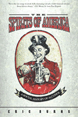

A history of "the great American thirst"
A history of "the great American thirst"


 A history of "the great American thirst"
A history of "the great American thirst"

|  |
The Spirits of AmericaA Social History of AlcoholEric Burnspaper EAN: 978-1-59213-269-0 (ISBN: 1-59213-269-3) |
A "Best of the Best from University Presses" program selection at the ALA Annual Conference, 2004
"Eric Burns' book is as lively and engaging as a tailgate party on a Saturday afternoon, yet as sobering as a car wreck and a diagnosis of addiction. Burns connects America's thirst for drink to some of the most important social movements in the country's history: abolition and suffragism, organized labor, Progressivism, and, of course, temperance and Prohibition. Reading this epic of desire and destruction is to see our story magnified through the bottom of a bottle. It's history by the shot glass."
—Bill Moyers
"Thousands of years ago, before Christ or Buddha or Muhammad...before the Roman Empire rose or the Colossus of Rhodes fell," Eric Burns writes, "people in Asia Minor were drinking beer." So begins an account as entertaining as it is extensive, of alcohol's journey through world—and, more important, American—history.
In The Spirits of America, Burns relates that drinking was "the first national pastime," and shows how it shaped American politics and culture from the earliest colonial days. He details the transformation of alcohol from virtue to vice and back again, how it was thought of as both scourge and medicine. He tells us how "the great American thirst" developed over the centuries, and how reform movements and laws (some of which, Burn s says, were "comic masterpieces of the legislator's art") sprang up to combat it. Burns brings back to life such vivid characters as Carrie Nation and other crusaders against drink. He informs us that, in the final analysis, Prohibition, the culmination of the reformers' quest, had as much to do with politics and economics and geography as it did with spirituous beverage.
Filled with the famous, the infamous, and the undeservedly anonymous, The Spirits of America is a masterpiece of the historian's art. It will stand as a classic chronicle—witty, perceptive, and comprehensive—of how this country was created by and continues to be shaped by its everchanging relationship to the cocktail shaker and the keg.
Excerpt available at www.temple.edu/tempress
"She began life as Carry Amelia Moore, her first name spelled like the verb instead of the female because her father did not know any better. He was 'a thoughtful but restless Irishman,' it has been said, a cattle trader and tobacco farmer who had never spent much time in school. Some years later, tired of questions and wisecracks and puzzled expressions, Nation changed the spelling herself to the more conventional Carrie. But by the turn of the twentieth century, having taken as her second husband a vagabond of a minister named David Nation and become convinced that alcoholic beverages were the express route to perdition, she returned to the original spelling, telling people that, as things turned out, her father had been prescient, not unlettered; her name was a sign that she had been put on this earth specifically to 'carry a nation' for temperance.
"Her first encounters with alcohol came as a young girl in her birthplace of Garrard County, Kentucky. She would sit at the breakfast table and watch her grandfather filling his tank for the day. As Nation later described the scene, the old man put in a glass some sugar, butter and brandy, then poured hot water over it, and, while the family were sitting around the room, waiting for breakfast, he would go to each member, and give to those who wished a spoonful of this toddy, saying, 'Will you have a taste, my daughter, or my son?'
"But he was not as generous as he sounds. No one got more than a single spoonful from grandpa, and he poured the rest of the cocktail—and a substantial quantity it was—down his own throat. Then he 'went for a rather aimless ride on his horse, after being wrestled to the saddle by his colored servant, Patrick.' Young Carrie would look after him quizzically, asking herself why he seemed like one man before he drank and like another, far less pleasant sort by the time he mounted up. What was it about the toddy and why did he need it so badly?"
"Eric Burns has written a marvelous history on the surprising role Alcohol has played in the making of our Republic. Brilliantly researched with elegantly interwoven anecdotes, Spirits of America makes for riveting reading. A truly important book."
—Douglas Brinkley, Director of The Eisenhower Center for American Studies and Professor of History at the University of New Orleans
"Burns, a self-described "non-academic historian" and host of Fox News Watch, takes readers on a romp with boozers and teetotalers in this high-spirited history of alcohol in America. ...Best of all are his lively portraits of mostly-forgotten historical figures, such as Diocletian Lewis, who, with his mother Delecta, formed the Visitation Bands, which gathered outside barrooms 'communicating their displeasure to the heavens.' ...readers who like informative fun need not be so straight-laced-there are plenty of solid facts here and the Emmy-winning author clearly knows how to spin a good yarn."
—Publishers Weekly
"By turns humorous and sobering, the book is filled with interesting facts and trivia (apparently bottles of cider were sometimes shared between spectators and trial participants in colonial American courtrooms), and Bums' engaging writing style makes the book a delight to read."
—History Magazine
"His prose is engaging and relaxed, written in the rhythms of an accomplished raconteur rather than the jargon of the academic. In short, [The Spirits of America] is about as dry as a colonial tavern."
—Andrew Stuttaford, National Review
"This is that rare vintage of a book: both a fascinating read and a reliable historical reference. Burns delivers a beauty."
—G.E. Murray, St. Louis Post-Dispatch
"...thoroughly enjoyable... [Burns] is at his best when he is dropping bits of trivia into longer tales."
—The Weekly Standard
"If Big Shots is the literary equivalent of an umbrella drink, Eric Burns's social history is like a straight whisky....informative and lively. Of course, with characters like Carry Nation floating about, who christened her approach to temperance "hatchetation"—her favorite tool to take to bars being a hatchet—liveliness would be hard to miss. ...Burns's book is a must for anyone with an interest in the long, ambivalent relationship America has had with distilled spirits."
—Wine & Spirits
"...students and the general public might enjoy this lighthearted approach."
—Choice
"Burns is a good writer who makes many pertinent and interesting points. If you don't know much about Prohibition and want to know more, The Spirits of America is a good place to start."
—American Brewer
"...a fascinating account of our complex love-hate affair with demon rum, liquor, booze and hooch."
—The Philadelphia Public Record
"[The Spirits of America] is a perfect marriage between factual information and anecdotal interludes."
—The Legal Intelligencer
"Burns has produced a fascinating book and demonstrated that alcohol, as well as Americans' ambivalent attitudes towards it, has been an important subtheme in American history."
—The Orange County Register
"Burns has written a delightful book and an intelligent one. It is easily the best popular history of drink and its enemies in the United States for the period before 1933."
—The Historian
"...overall entertaining and informative. [Burns'] choice of key players in the alcohol debates over the past two centuries is compelling and justifies his perspective of alcohol's social history."
—Material Culture
"[Burns has] a conversational way with a tall, sturdy tale that's just perfect for a backroom booze-athon. Cheers."
—The Philadelphia City Paper
Read "Story of Tippling in U.S. Lets Reader Go with the Flow," a review from the St. Louis Post-Dispatch, 28 December 2003, written by G.E. Murray (pdf).
Read "Washington Experienced Cheers and Booze," a review from the New York Post Online Edition, 1 January 2004, written by Steve Dunleavy (pdf).
Read "Killjoy Was Here," a review from National Review, 31 December 2003, written by Andrew Stuttaford (pdf).
"...enjoyable...beautifully written...I enjoyed every page. The book is well organized and moves briskly through many good stories of temperance wars; there is even some poignancy...Spirits of America is a good read."
—Indiana Magazine of History
"Eric Burns's The Spirits of America provides a lively jaunt through the United States' lengthy and dysfunctional relationship with its favored medium of mild derangement, alcohol... His prose is breezy and energetic... One of the primary strengths of The Spirits of America—beyond Burns's raconteurish affability—is the deftness with which it illuminates the complexities and tragedies that underlie the more familiar aspects of the history of America and alcohol. It's a charming and entertaining book, to be sure; at times it's also, as it should be, somewhat sobering."
—Gastronomica
Also available in e-book
Introduction: The Spirits of the World
1. The First National Pastime
2. The General and the Doctor
3. The Father of Prohibition and Other Kinfolk
4. The Crusaders and Their Crusades
5. The Importance of Being Frank
6. Hatchetation
7. The Wheeler-Dealer and His Men
8. The Blues and How They Played
9. Executive Softness
10. The Hummingbird Beats the Odds
Epilogue: Strange Bedfellows
Acknowledgments
Notes
Select Bibliography
Index
 | Eric Burns is the host of "Fox News Watch" on the Fox News Channel. He was named by the Washington Journalism Review as one of the best writers in the history of broadcast journalism. His other books include Broadcast Blues and The Joy of Books. |
General Interest
History
American Studies
© 2015 Temple University. All Rights Reserved. This page: http://www.temple.edu/tempress/titles/1684_reg.html.